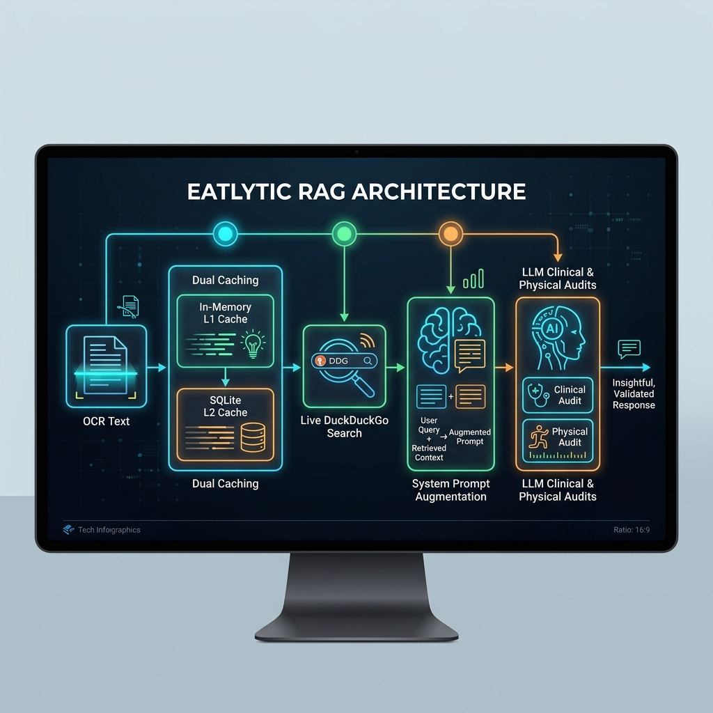

Eatlytic is a Personal Nutrition Intelligence Layer (PNIL). Instead of just adding up calories (like general fitness trackers), Eatlytic decodes the food label to reveal its physical truth and safety profile.
The codebase is split into specific modules. Here is exactly what they do in plain English:
Takes the parsed nutrients and runs offline medical logic. It assigns a safety rating (Safe/Limit/Avoid) based on user conditions (e.g. diabetes) without needing expensive LLMs.
Runs Atwater Calorie calculations: (protein*4) + (carbs*4) + (fat*9) to catch calorie fraud. It also scans ingredients lists for hidden sugars to catch fake "No Added Sugar" claims.
Manages the entire scan pipeline: handles OCR extraction fallbacks, routes matches, triggers RAG searches, runs the clinical engine, and stores the results.
Checks user genetic SNPs for diabetes predisposition (TCF7L2), sodium-sensitive hypertension (AGT), and lactose intolerance (LCT) to override safety scores.
Manages continuous glucose monitor feeds, calculates Time-in-Range (70-140 mg/dL), and links food scans with actual glucose spikes 2 hours post-meal.
Loads additives.json to perform rapid offline lookups on E-numbers and INS codes (like MSG or Tartrazine) for safety status and FSSAI rules.
A clinical dashboard allowing professional dietitians to track their patients' scans, CGM spikes, compliance reports, and send medical interventions.
Integrates Model Context Protocol (MCP) to let external AI systems query Eatlytic's database and metabolic compatibility scoring dynamically.
How a scan moves through Eatlytic when a user photographs a label package:
How the real-time web-augmented RAG (Retrieval-Augmented Generation) pipeline operates to pull live product updates and safety alerts:
research_cache) before being injected straight into the LLM system prompt.

"Nutrition Facts Serving Size". We need to refactor query formulation to search based on the *detected ingredients*.What the development team is focusing on next to launch Eatlytic successfully: